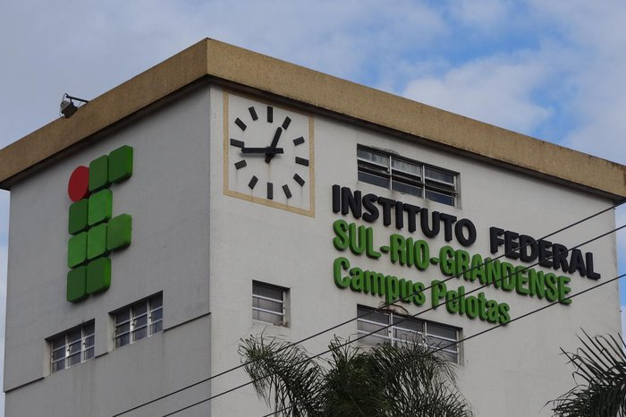

Sobre o IFSul
O Instituto Federal de Educação, Ciência e Tecnologia Sul-rio-grandense (IFSul), integrante da Rede
Federal de Educação Profissional e Tecnológica, foi criado a partir do CEFET-RS, mediante Lei
n°11.892, de 29 de dezembro de 2008.
O IFSul, cuja sede administrativa está localizada em Pelotas/RS, é formado por quatorze câmpus:
Pelotas, Pelotas-Visconde da Graça, Sapucaia do Sul, Charqueadas, Passo Fundo, Bagé, Camaquã,
Venâncio Aires, Santana do Livramento, Sapiranga, Lajeado, Gravataí, Jaguarão e Novo Hamburgo.
O Instituto Federal, caracterizado pela verticalização do ensino, oferta educação profissional e
tecnológica em diferentes níveis e modalidades de ensino, assim como articula a educação superior,
básica e tecnológica.
A Instituição reúne elementos singulares para a definição de sua identidade, assumindo papel
representativo de uma verdadeira incubadora de políticas sociais, uma vez que constrói uma rede de
saberes que entrelaça cultura, trabalho, ciência e tecnologia em favor da sociedade
Conheça nossos cursos Superiores Clicando Aqui
